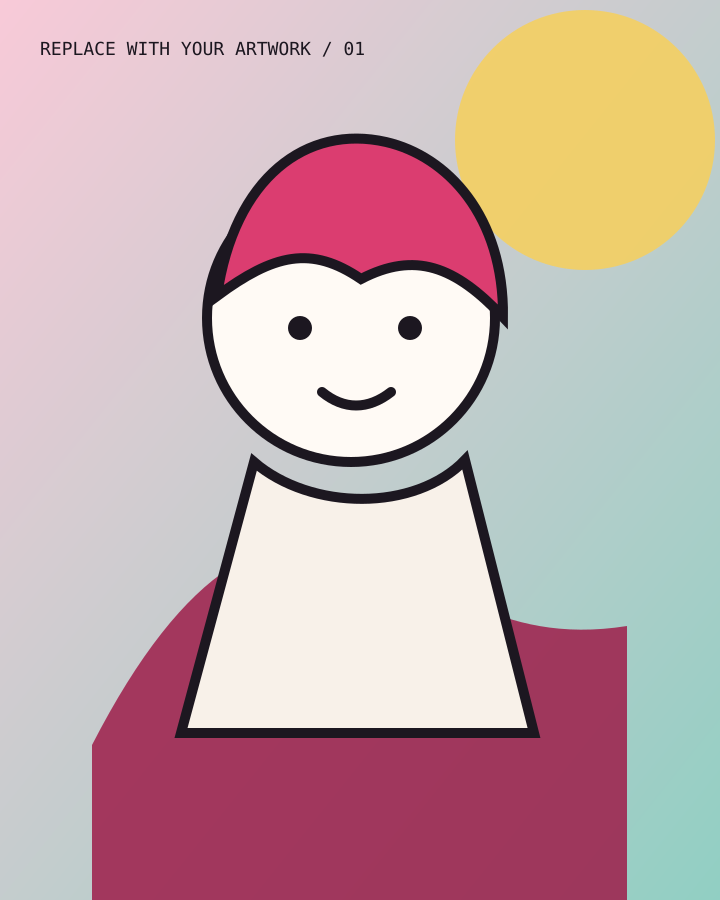
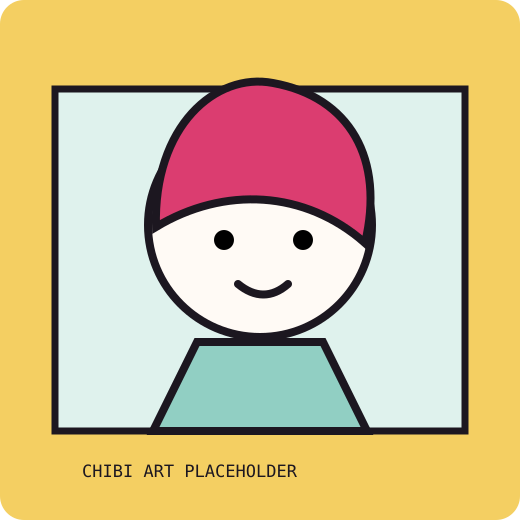

COMMISSIONS OPEN · 委託開放中
兼職繪師
自由插畫家｜
提供角色插畫、Q版、三視圖與貼圖委託。接受原創、二創、夢向與 Furry 類型。
- START FROM
- NT$ 300
- TURNAROUND
- 約 2–6 週
- LANGUAGE
- 中文 / English
original
character


ISKÏ
FREELANCE
ILLUSTRATOR
CHARACTER ART · CHIBI · REFERENCE SHEET · STICKERS · CHARACTER ART · CHIBI · REFERENCE SHEET · STICKERS ·
-
01
選擇方案
找到符合需求的委託類型。
-
02
提供設定
附上角色資料、用途與參考圖。
-
03
確認報價
確認排程、價格與付款方式。
-
04
繪製交付
依方案確認草稿並交付 PNG。
插畫委託價格如何計算？
依方案、角色數量、複雜度、背景和使用方式報價。Q版與正比驚喜包 NT$850 起；正比客製化 NT$1,150 起。
完成一張委託需要多久？
小型圖約 3 週起，大型圖約 6 週起。實際時間會依目前排單、角色複雜度與修改情況確認。
委託可以修改幾次？
客製化方案草稿期間可修改 2 次，完稿後可調整顏色 2 次。驚喜包不提供草稿及修改，畫錯設定除外。
可以將作品用於商業用途嗎？
可以，但需在報價前說明用途。商業使用通常以個人非商用價格的 2.5–3 倍起計算。